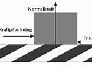
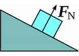

Тре́ние — физическое явление соприкасающихся тел при их относительном смещении в плоскости касания (внешнее трение) либо при относительном смещении параллельных слоёв жидкости, газа или деформируемого твёрдого тела (внутреннее трение, или вязкость). Далее в этой статье под трением понимается лишь внешнее трение. Изучением процессов трения занимается раздел физики, который называется механикой фрикционного взаимодействия, или трибологией.

Разновидности силы трения
При наличии относительного движения двух контактирующих тел силы трения, возникающие при их взаимодействии, можно подразделить на:
Трение скольжения
Трение качения
Трение покоя
Трение кручения
Характер фрикционного взаимодействия
В физике взаимодействие трения принято разделять на
сухое, когда взаимодействующие твёрдые тела не разделены никакими дополнительными слоями/смазками
граничное, когда в области контакта могут содержаться слои и участки различной природы
смешанное, когда область контакта содержит участки сухого и жидкостного трения
жидкостное (вязкое), при взаимодействии тел, разделённых слоем твёрдого тела (порошком графита), жидкости или газа
Сила реакции опоры
Сила нормальной реакции определяется как результирующая сила, сжимающая две параллельные поверхности вместе, а её направление перпендикулярно этим поверхностям.

Закон Кулона
Для большинства пар материалов значение коэффициента трения не превышает 1 и находится в диапазоне 0,1 — 0,5. Если коэффициент трения превышает 1то означает, что между контактирующими телами имеется сила адгезии
Сцепление с поверхностью
Наличие трения обеспечивает возможность перемещаться по поверхности. Так, при ходьбе именно за счёт трения происходит сцепление подошвы с полом, в результате чего происходит отталкивание от пола и движение вперёд. Точно так же обеспечивается сцепление колёс автомобиля (мотоцикла) с поверхностью дороги